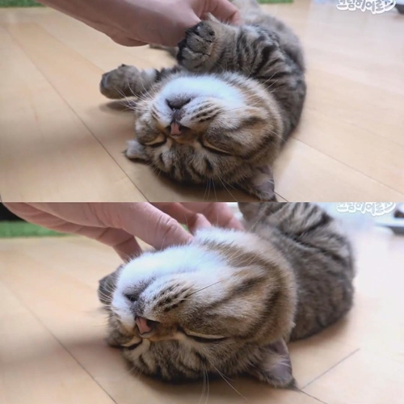

- html
- CSS
- JavaScript
- 23232
- rerere
hyper markup language (HTML)is the standard makr up language for
creating web pages and web and web applications
아이우에오
Creating Wbe Pages
ABC
스트롱 글씨키우기 U는 밑줄강조
h1는 제목을 나타내는 태그
br 줄바꿈 p는 단락 표현 li는 리스트 태그 Ul은 br과빗스한 태그
ol은 자동으로 숫자 태그 body 본문 head 본문 설명 html 고위직 태그
17장까지봄
12
34567890
123456
1231231232
123145
67899
coding

web1-이란무엇
3131
312312312
123231312\